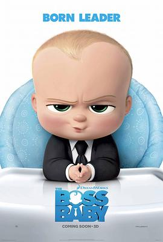

宝贝老板 / The Boss Baby
又名：娃娃老板 / 波士BB(港)
作为独生子女，虽然不能有很大的共鸣，但是能理解老大拥有100%的父母，而老二加入后就只能拥有50% or less的父母了，所以老大的心理落差是最大的。其实在娃没有的时候，partner也是一样，对partner的爱在孩子出生后也会分出去。很有趣的体验，以及可惜的80、90后这一代。
作品信息
| 导演 | 汤姆·麦格拉思 |
| 编剧 | 迈克尔·麦库勒斯 / 玛拉·弗雷齐 |
| 主演 | 亚历克·鲍德温 / 迈尔斯·克里斯托弗·巴克什 / 吉米·坎摩尔 / 丽莎·库卓 / 史蒂夫·布西密 / 托比·马奎尔 / 詹姆斯·麦格拉思 / 康拉德·弗农 / 薇薇安·叶 / 小埃里克·贝尔 / 大卫·索伦 / 伊迪·米尔曼 / 詹姆斯·雷恩 / 沃尔特·道恩 / 朱尔斯·温特 |
| 类型 | 喜剧 / 动画 |
| 制片国家/地区 | 美国 |
| 语言 | 英语 |
| 上映日期 | 2017-03-12(迈阿密电影节) / 2017-03-31(美国) |
| 片长 | 97分钟 |
| IMDb | tt3874544 |
说过什么
2024-12-01 10:44:48
看过 · 时间来自广播，短评来自标记页
作为独生子女，虽然不能有很大的共鸣，但是能理解老大拥有100%的父母，而老二加入后就只能拥有50% or less的父母了，所以老大的心理落差是最大的。其实在娃没有的时候，partner也是一样，对partner的爱在孩子出生后也会分出去。很有趣的体验，以及可惜的80、90后这一代。
2024-11-26 04:06:41
广播 · 想看
最后一次看到是 2026-08-01T11:04:13+10:00 · 豆瓣原页